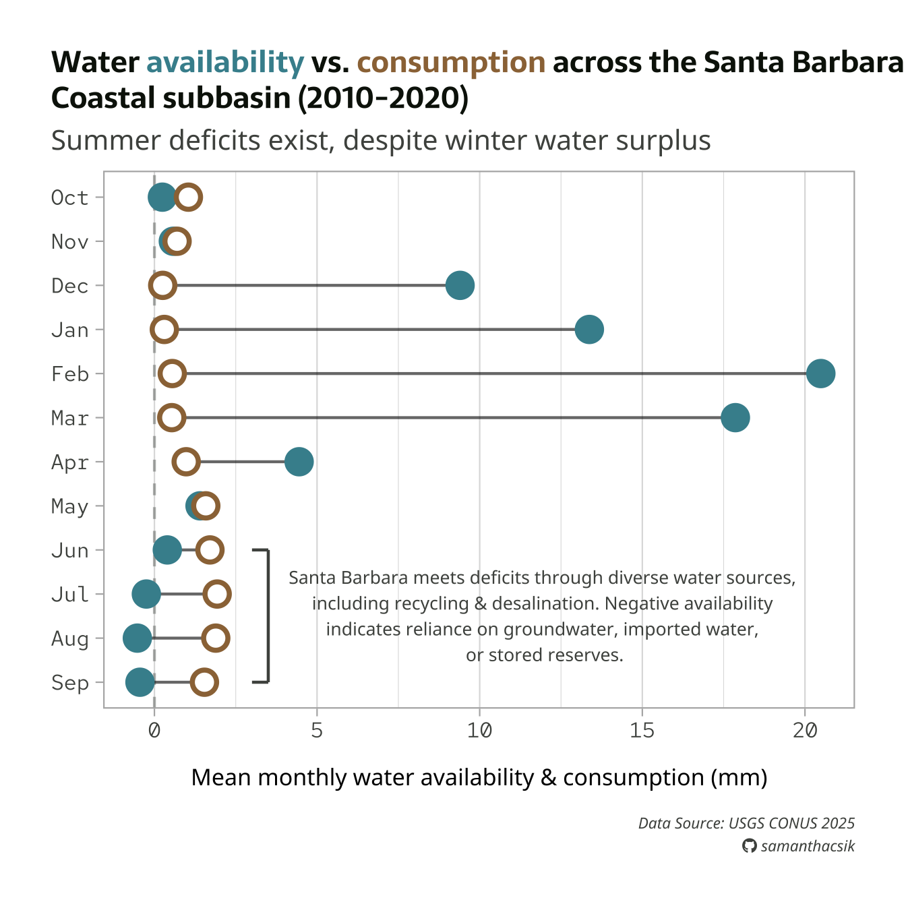

#..........................load packages.........................
library(tidyverse)
library(janitor)
library(showtext)
library(glue)
library(ggtext)
#..........................import data...........................
iwa_data <- read_csv(here::here("week7", "data", "combined_iwa-assessment-outputs-conus-2025_CONUS_200910-202009_long.csv"))
#..................create df of subregions names.................
# data only contain HUC codes; must manually join names if we want to include those in our viz (which we do! we'll mainly be looking at CA subregions)
# subregions (& others) identified in: https://water.usgs.gov/GIS/wbd_huc8.pdf
# there may be a downloadable dataset containing HUCs & names out there...but I couldn't find it
subregion_names <- tribble(
~subregion_HUC, ~subregion_name,
"1801", "Klamath-Northern California Coastal",
"1802", "Sacramento",
"1803", "Tulare-Buena Vista Lakes",
"1804", "San Joaquin",
"1805", "San Francisco Bay",
"1806", "Central California Coastal",
"1807", "Southern California Coastal",
"1808", "North Lahontan",
"1809", "Northern Mojave-Mono Lake",
"1810", "Southern Mojave-Salton Sea",
)
#......................import Google fonts.......................
# `name` is the name of the font as it appears in Google Fonts
# `family` is the user-specified id that you'll use to apply a font in your ggplot
font_add_google(name = "Sarala", family = "sarala")
font_add_google(name = "Noto Sans", family = "noto-sans")
font_add_google(name = "Red Hat Mono", family = "red")
#....................import Font Awesome fonts...................
# we'll only be using an icon from the brands collection today; you'll need to import the other .otf files if you also plan to use icons from those collections
font_add(family = "fa-brands",
regular = here::here("fonts", "Font Awesome 7 Brands-Regular-400.otf"))
Note
This template follows the typography & annotations slides. Please be sure to cross-reference the slides, which contain important information and additional context!
Setup
Note
Recall our original dumbbell plot from the amounts / rankings lecture. Here, we’ll focus on adding text and updating our theme and fonts.
Wrangle data
This is the same code we saw in the amounts / rankings lecture.
#......create df with just CA water resource region (HUC 18).....
ca_region <- iwa_data |>
clean_names() |>
mutate(region_HUC = str_sub(string = huc12_id, start = 1, end = 2),
subregion_HUC = str_sub(string = huc12_id, start = 1, end = 4)) |>
filter(region_HUC == "18") |>
separate_wider_delim(cols = year_month,
delim = "-",
names = c("year", "month")) |>
mutate(year = as.numeric(year),
month = as.numeric(month)) |>
left_join(subregion_names) |>
select(year, month, huc12_id, region_HUC, subregion_HUC, subregion_name, availab_mm_mo, consum_mm_mo, sui_frac)
#.................create df of just SBC subbasin.................
sbc_subbasin_monthly <- ca_region |>
mutate(subbasin_HUC = str_sub(string = huc12_id, start = 1, end = 8)) |>
filter(subbasin_HUC == "18060013") |>
group_by(month) |>
summarize(mean_avail = mean(availab_mm_mo, na.rm = TRUE),
mean_consum = mean(consum_mm_mo, na.rm = TRUE)) |>
mutate(month = month.abb[month],
month = factor(month, levels = rev(c(month.abb[10:12], month.abb[1:9]))))Create plot
We’ll build out this plot across both the typography & annotations lectures.
#......................create color palette......................
pal <- c("avail" = "#448F9C",
"consum" = "#9C7344",
"dark_gray" = "#0C1509",
"light_gray" = "#4E514D")
#........................preview palette.........................
# monochromeR::view_palette(pal)
#..........................create title..........................
title <- glue::glue("Water
<span style='color:#448F9C;'>availability</span>
vs.
<span style='color:#9C7344;'>consumption</span>
across the Santa Barbara<br>
Coastal subbasin (2010-2020)")
#.........................create caption.........................
github_icon <- ""
github_username <- "samanthacsik"
caption <- glue::glue(
"Data Source: USGS CONUS 2025<br>
<span style='font-family:fa-brands;'>{github_icon};</span>
{github_username}"
)
#........................create annotation.......................
annotation <- glue::glue(
"Santa Barbara meets deficits through diverse water sources,
including recycling & desalination. Negative availability
indicates reliance on groundwater, imported water,
or stored reserves."
)
#..............................plot..............................
water_plot <- ggplot(sbc_subbasin_monthly) +
geom_vline(xintercept = 0,
linetype = "dashed",
color = pal["light_gray"],
alpha = 0.4) +
geom_linerange(aes(y = month,
xmin = mean_consum, xmax = mean_avail),
alpha = 0.6) +
geom_point(aes(x = mean_avail, y = month),
color = pal["avail"],
size = 5,
stroke = 2) +
geom_point(aes(x = mean_consum, y = month),
color = pal["consum"],
fill = "white",
shape = 21,
size = 5,
stroke = 2) +
annotate("segment",
x = 3.5, xend = 3.5,
y = 4, yend = 1, # or y = "Jun", yend = "Sep"
color = pal["light_gray"],
linewidth = 0.8) +
annotate("segment",
x = 3.5, xend = 3,
y = 4, yend = 4,
color = pal["light_gray"],
linewidth = 0.8) +
annotate("segment",
x = 3.5, xend = 3,
y = 1, yend = 1,
color = pal["light_gray"],
linewidth = 0.8) +
annotate(geom = "text",
x = 12,
y = 2.5,
label = annotation,
size = 3.5,
color = pal["light_gray"],
hjust = "center",
family = "noto-sans") +
labs(title = title,
subtitle = "Summer deficits exist, despite winter water surplus",
caption = caption,
x = "Mean monthly water availability & consumption (mm)") +
theme_light(base_size = 17) +
theme(
plot.title.position = "plot",
plot.title = ggtext::element_markdown(family = "sarala",
face = "bold",
size = rel(0.98),
lineheight = 1.2,
color = pal["dark_gray"]),
plot.subtitle = element_text(family = "noto-sans",
size = rel(0.9),
color = pal["light_gray"],
margin = margin(b = 8)),
axis.text = element_text(family = "red",
size = rel(0.7),
color = pal["light_gray"],),
axis.title.x = element_text(family = "noto-sans",
size = rel(0.75),
margin = margin(t = 15)),
axis.title.y = element_blank(),
plot.caption = ggtext::element_markdown(family = "noto-sans",
face = "italic",
color = pal["light_gray"],
size = rel(0.5),
halign = 1,
lineheight = 1.5,
margin = margin(t = 15)),
panel.grid.major.y = element_blank(),
plot.margin = margin(t = 1, r = 1, b = 1, l = 1, "cm")
)
#..............enable {showtext} for newly opened GD.............
showtext_auto(enable = TRUE)
#...........................print plot...........................
water_plot
Save plot as a PNG file
#..............enable {showtext} for newly opened GD.............
showtext_auto(enable = TRUE)
#...................set resolution to match GD...................
showtext_opts(dpi = 300)
#..............write plot to file (aka save as png)..............
ggsave(
filename = here::here("week7", "images", "sbc-hydro.png"),
plot = water_plot,
device = "png",
width = 8,
height = 7,
unit = "in",
dpi = 300
)
#...............turn off {showtext} text rendering...............
showtext_auto(enable = FALSE)
Note
Below is our final plot, saved as a PNG. You’ll want to fine-tune absolute sizes and positions, which don’t automatically scale with a changing plot size. Here, we may want to increase the annotation text size and shift it slightly left.

More examples
To see more typography and annotation examples (including how to use geom_text() & geom_label() + the {ggrepel} package to label individual points, how to draw arrows & boxes, etc.), you can check out the archived versions of the typography & annotations lectures.